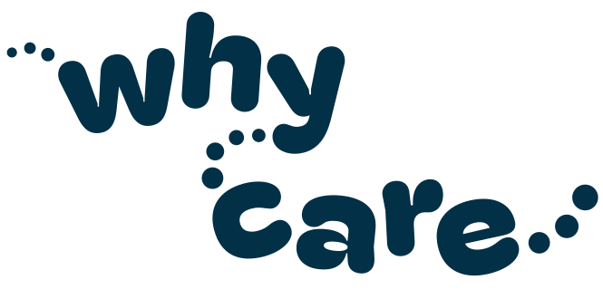

Children’s services consultancy, co-designed with the people it affects.
Most councils we work with already know something needs to change. What they need is help finding out exactly what, from the children, families and staff who live with it, and then help making the change stick. Since 2017 we’ve done that on 40 projects, for 36 local authorities and for national bodies including the Department for Education. Our consultancy covers four areas.
Every project is led by consultants with professional experience of running and redesigning children’s services, alongside people with lived experience of using them.
Four areas of consultancy
Jump to the one that fits what you need to change.
Transformation and service design
When services call usA new duty lands, an inspection says something must change, or a model that worked five years ago doesn’t any more.
What we do
- A shared vision, written with staff and young people
- A new service model, with a business case to fund it
- A consultation that hears from everyone the change affects
Previous work
Fostering, with Why Care
When services call usToo few foster carers are coming in, too many are leaving, and the new national standards ask services to work in new ways.
What we do
- Find where your service loses applicants and carers, with the Why Care Diagnostic
- Get applicants ready for panel in around 4 months, with the Why Care Assessment
- Support every new carer through their first year
- Put England’s new fostering standards into practice
Why Care’s founder was the lead drafter of the new national fostering standards for the Department for Education. Luke Rodgers BEM was the engagement lead.
See how we help you keep foster carers →Previous work
Participation and co-production
When services call usMost services say children’s voices shape their work. Fewer can point to a decision that changed because of them.
What we do
- Participation strategies and youth voice services, designed with young people
- National and regional consultations
- Youth peer research, and peer mentoring by care-experienced adults
Previous work
Employment and pathways
When services call usCare leavers are more likely than their peers to be out of education, employment or training, and councils now have wider corporate parenting duties to change that.
What we do
- Care to Work: work experience at 16 to 18 and paid roles at 18 to 25
- Employer partnerships and events
- Local offers care leavers can actually use
Previous work
Some of this we do with partners.
Fostering with Why Care, employers like PwC, and Madlug, Become and the Relational Social Work Podcast behind our Summit and Fellowship. Other organisations can partner with us too.
See our partnerships
How a commission works
Every commission follows the same five steps, whichever area it sits in. Here is what you get at each one.
- 1A conversation
A free call with Luke or a consultant. Tell us what’s happening in your service.
You get- An honest view on whether we’re the right people to help, and if not, who might be
- A first idea of what the work could look like
- 2A short diagnostic
We listen to your staff and young people and read the evidence you already hold.
You get- A summary of what we heard and read
- The priorities we would focus on first
- 3A clear brief
We write down exactly what the work is before anything starts.
You get- Named outcomes
- A timeline and a price
- Who will be involved, and how
- 4The work, done together
Co-produced with your people and your young people.
You get- Regular progress reports
- Early warning if anything drifts off track
- Drafts you can test before they are final
- 5A clean handover
Everything your teams need to carry it on without us.
You get- The finished products, owned by you
- Guidance for the people who will run it
- A plan to keep it going
No surprises. The first call is free. Nothing starts until you have agreed the brief, the outcomes, the timeline and the price.